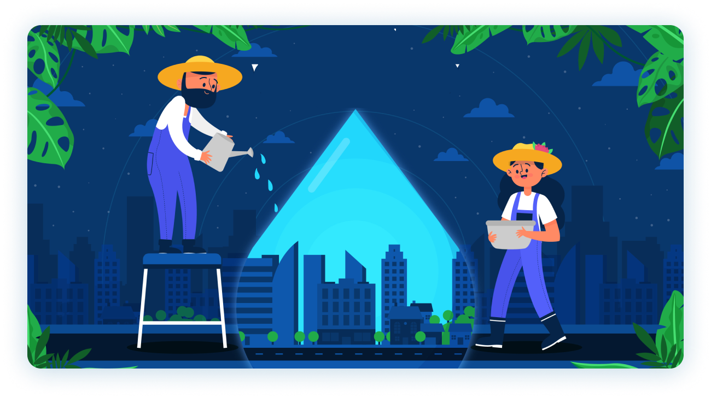

Ranwater Collection
Every Drop counts - collect rainwater for a sustainable future

About Us
Greetings! Drop focuses on the collection of rainwater in Kathmandu. Our team comprises of 13 individuals who are very passionate. We strive to promote sustainable practices and lessen our impact on the environment. We believe that rainwater harvesting is a simple yet effective way to conserve resources and minimize our reliance on groundwater.
The primary aim of this website is to share our knowledge and experience regarding rainwater collection. We aim to offer practical advice on the installation and maintenance of a rainwater harvesting system and inspire people to adopt this practice in their daily lives.
We are thrilled to take you on this journey with us and aspire to encourage you to take steps towards a sustainable future. We appreciate your visit and support!
theme
Objectives

Effective system
We aim to build a sustainable and effective system for collecting, storing, and utilizing rainwater.

Boost water availability
We aim to boost water availability for home and agricultural use.

Reduce load
We aim to reduce the load on groundwater sources.

Mitigate negative impacts
We aim to ameliorate the negative effects of water shortages during the dry season.

Promote water conservation
We aim to promote water conservation.

Enhance water management
We aim to enhance overall water management in the Kathmandu Valley.
Ideate
Our team generated a variety of ideas during the ideate process,
and we then began toeliminate them in order to select the best one
Brainstrome
Our team created a variety of ideas and views to address the water scarcity issue in Kathmandu during the ideate process. We had brainstorming sessions and investigatedseveral techniques to solve the problem.Initially, we considered grand solutions that would necessitate significant investment andcomplex infrastructure. However, as we dug deeper into the issue and considered thefeasibility of our proposals, we realized that our solution needed to be both accessible andcost-effective. We wanted to provide a solution that anyone, regardless of financialmeans, could use.
Sketch
Sketch 1

Sketch 2

Sketch 3: Final Idea